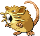

-
Bulbasaur #001

- Grama
- Veneno
Há uma semente de planta em suas costas desde o dia que este Pokémon nasce.A semente cresce lentamente.
-
Ivysaur #002

- Grama
- Veneno
Quando o bulbo em suas costas cresce, parece perder a capacidade de ficar de pé em suas patas traseiras.
-
Venusaur #003

- Grama
- Veneno
Sua planta floresce quando está absorvendo energia solar. Ele permanece em movimento para buscar energia solar.
-
Charmander #004

- Fogo
Tem preferencia por coisas quentes. Quando chove, diz-se que o vapor jorra da ponta de sua cauda.
-
Charmeleon #005

- Fogo
Tem uma natureza bárbara. Na batalha, ele chicoteia sua cauda ardente e corta com garras afiadas.
-
Charlizard #006

- Fogo
Ele cospe fogo que é quente o suficiente para derreter pedregulhos. Pode causar incêndios florestais soprando chamas.
-
Squirtle #007

- Água
Quando ele retrai seu logo pescoço em sua concha, ele esguicha água com força vigorosa.
-
Wartotle #008

- Água
É reconhecido como um símbolo de longevidade. Se sua concha tem algas esse Wartotle é muito antigo.
-
Blastoise #009

- Água
Ele esmaga seu inimigo sob seu corpo pesado para causar desmaios. Em uma pitada, ele se retirará dentro de sua concha.
-
Caterpie #010

- Inseto
Para proteção, ele libera um fedor horrível da antena de sua cabeça para afastar os inimigos.
-
Metapod #011

- Inseto
Está esperando o momento de evoluir. Nesta fase, só pode endurecer, por isso permanece imóvel para evitar o ataque.
-
Butterfree #012

- Inseto
- Fly
Está esperando o momento de evoluir. Nesta fase, só pode endurecer, por isso permanece imóvel para evitar o ataque.
-
Weedle #013

- Inseto
- Poison
Cuidado com o ferrão afiado em sua cabeça. Ele se esconde na grama e nos arbustos onde come folhas.
-
Kakuna #014

- Bug
- Poison
Capaz de se mover apenas ligeiramente. Quando em perigo, pode mostrar seu ferrão e envenenar seu inimigo.
-
Beedrill #015

- Bug
- Poison
Tem três ferrões venenosos nas patas dianteiras e na cauda. Eles são usados para espetar seu inimigo repetidamente.
-
Pidgey #016

- Normal
- Fly
Muito dócil. Se atacado, muitas vezes chuta areia para se proteger, em vez de revidar.
-
Pidgeotto #017

- Normal
- Fly
Este Pokémon está cheio de vitalidade. Ele voa constantemente em torno de seu grande território em busca de presas.
-
Pidget #018

- Normal
- Fly
Este Pokémon voa na velocidade de Mach 2, buscando presas. Suas grandes garras são temidas como armas perversas.
-
Rattata #019

- Normal
Mastigará qualquer coisa com suas presas. Se você vir um, pode ter certeza de que mais 40 vivem na área.
-
Raticate #020
- Normal
Suas patas traseiras são palmadas. Eles agem como nadadeiras, então podem nadar em rios e caçar presas.
-
Pikachu #025

- Relâmpago
Quando está com raiva, descarrega imediatamente a energia armazenada nas bolsas de suas bochechas.
-
Gastly #092

- Fantasma
- Poison
Ele envolve seu oponente em seu corpo gasoso, enfraquecendo lentamente sua presa ao envenená-la através da pele.
-
Haunter #093

- Fantasma
- Poison
Ele gosta de se esconder no escuro e bater nos ombros com uma mão gasosa. Seu toque causa estremecimento sem fim.
-
Gengar #094

- Fantasma
- Poison
Para roubar a vida de seu alvo, ele se esconde na sombra da presa e silenciosamente espera por uma oportunidade.
-
Mewtwo #150

- Psíquico
Seu DNA é quase o mesmo de Mew. No entanto, seu tamanho e disposição são muito diferentes.
-
Mew #151

- Psíquico
Quando visto através de um microscópio, o cabelo curto, fino e delicado deste Pokémon pode ser visto.
-
Riolu #447

- Lutador
Eles se comunicam uns com os outros usando suas auras. Eles são capazes de correr durante toda a noite.
-
Lucario #448

- Lutador
Diz-se que nenhum inimigo pode permanecer invisível para Lucario, uma vez que pode detectar auras - mesmo aquelas de inimigos que de outra forma não poderia ver.